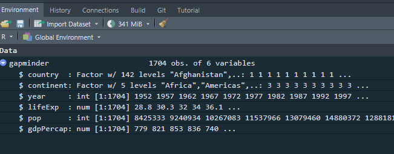

Dataframes, as we saw the previous section, a dataframe is a tabular data format, with columns and rows. Columns are variable names and rows are individual observations. Let us recreate the previous dataframe of names and ages of this class:
# Firstly, create a character vector with namesnames <-c("thabiso", "nontando", "thandolwethu", "akhona", "perry", "balindile", "thembelani", "sabeliwe", "phakamani", "obianuju", "tshepang", "charity", "lungelo", "ntsikelelo", "akhona", "duduzile")set.seed(14) #I do this so that we can get same results every time we generate numbers or simulate# Create a numeric vector of agesage <-sample(18:32, 16, replace = T)# Create a dataframedata_frame <-data.frame(names, age) # print the dataframedata_frame
A dataframe is basically made of vectors. In our data_frame, we have character (names) and numeric (age) vectors that make our dataframe. We can extract these elements using the $ sign:
Now you have an object, which is a dataframe, called gapminder, you can see it in the Environment pane in RStudio. It shows that it has ncol(gapminder) columns/variables and nrow(gapminder) observations/rows

gapminder dataframe in Environment pane
You can use the str() fucntion to get the structure of the dataframe:
You can get a sample of the first observations/rows using head() function:
head(gapminder)
# A tibble: 6 × 6
country continent year lifeExp pop gdpPercap
<chr> <chr> <int> <dbl> <int> <dbl>
1 Afghanistan Asia 1952 28.8 8425333 779.
2 Afghanistan Asia 1957 30.3 9240934 821.
3 Afghanistan Asia 1962 32.0 10267083 853.
4 Afghanistan Asia 1967 34.0 11537966 836.
5 Afghanistan Asia 1972 36.1 13079460 740.
6 Afghanistan Asia 1977 38.4 14880372 786.
4.1.4 select() function
We may be interested in some of the columns in the gampminder dataframe, let say, for example, “country” and “pop” variables and discard others; we use the select() function:
You will see the importance of the pipe operator later when our analysis get complicated. Throught the course, we will use the pipe operator. Also, you will in many textbooks and online resources uses the %>% operator instead. That is because initially, a pipe operator was an external function within the mgttr package, so it was not an built-in R function. In recent years, the base R |> pipe operator has been developed and we will stick to it. But they all do the same thing, so it your preference:
Also, notice that we selected “country’ and”pop” columns but did not save them and assigned to an object. To store the results into an object, we have to use assignment operator (<-):
Now we have saved results as gapminder_selected, and we can do other analysis with this object because we have saved it. So, in a nutshell, when you run a code without assigning results into an object, using the <- operator, results will not be saved but will be printed.
4.1.5 filter() function
You may be interested in observations that meet certain conditions. We use filter() function to return the list that meet our conditions. Let us “continent” variable in gapminder dataframe. Get a basic table first:
table(gapminder$continent)
Africa Americas Asia Europe Oceania
624 300 396 360 24
Filter has several operators:
==: equal to
!=: not equal to
>: greater than
<: less than
>=: greater than or equal to
<=: less than or equal to
There are five continents. Let us filter only observations from the Africa continent:
# A tibble: 624 × 6
country continent year lifeExp pop gdpPercap
<chr> <chr> <int> <dbl> <int> <dbl>
1 Algeria Africa 1952 43.1 9279525 2449.
2 Algeria Africa 1957 45.7 10270856 3014.
3 Algeria Africa 1962 48.3 11000948 2551.
4 Algeria Africa 1967 51.4 12760499 3247.
5 Algeria Africa 1972 54.5 14760787 4183.
6 Algeria Africa 1977 58.0 17152804 4910.
7 Algeria Africa 1982 61.4 20033753 5745.
8 Algeria Africa 1987 65.8 23254956 5681.
9 Algeria Africa 1992 67.7 26298373 5023.
10 Algeria Africa 1997 69.2 29072015 4797.
# ℹ 614 more rows
africa_gapminder object is a dataframe we have just created, with only countries from the African continent. What filter() does is to return observations/rows that only meet our conditions:
Let us filter a numeric vector; for example, we may want to filter countries with population of above 50 million and assign results to an object named high_pop: